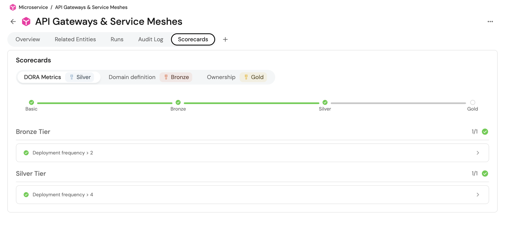
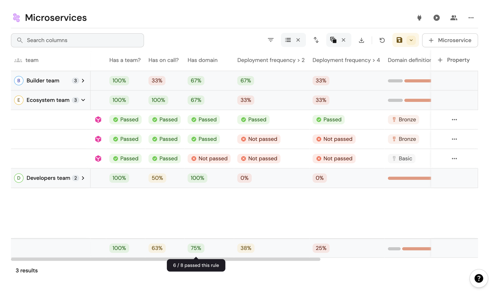
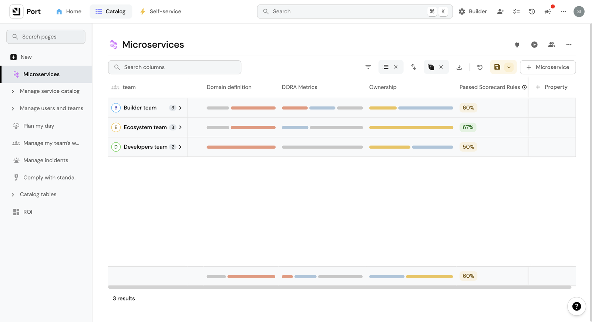
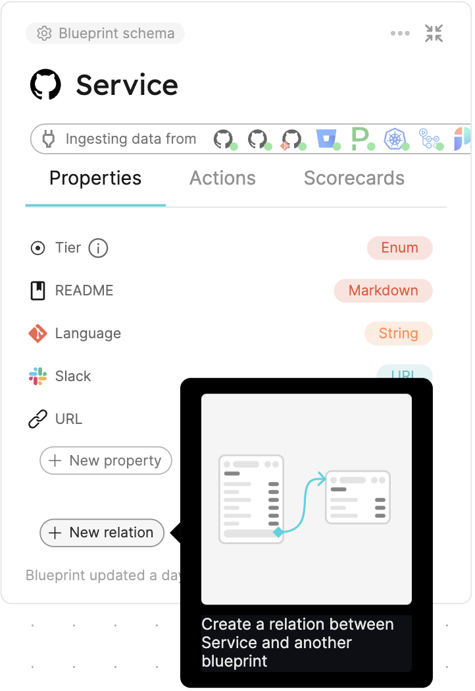

Orden
De un problema de organización a una herramienta. La herramienta viene al final, y a propósito.
Encuadre
Se usa una herramienta comercial como ejemplo. No es una recomendación de compra.
La demostración corre sobre una organización aislada, con datos ficticios.
El docente trabaja en una consultora que implementa estas plataformas. Ese sesgo se declara ahora y se contrapesa al final.
Bloque 1 · repaso, no explicación
DevOps
Qué vino a resolver. Lo completan ustedes
¿Qué problema vino a resolver DevOps?
Sin mirar apuntes. Tres respuestas y seguimos.
El muro, y el ciclo que lo sostenía
Desarrollo
Se le pedía funcionalidad nueva
Se lo medía por velocidad de cambio
Operaciones
Se le pedía sostener producción
Se lo medía por estabilidad
1Despliegues infrecuentes
2Lotes grandes
3Más riesgosos
4Se hacen menos seguido
Qué resolvió, con evidencia
Dimensión
Métrica
Rendimiento
Frecuencia de despliegue · lead time para cambios
Estabilidad
Tasa de fallas de cambios · tiempo de restauración
Hallazgo central
Velocidad y estabilidad no se oponen. Los equipos de mejor
desempeño puntúan alto en las cuatro a la vez — y eso invalidó la premisa del
muro.
DORA — Accelerate State of DevOps · dora.dev
Tipología de Westrum
Tipo
Orientación
Qué hace con una mala noticia
Patológica
Al poder
Se oculta. El mensajero se castiga
Burocrática
A las reglas
Se ignora si no corresponde al procedimiento
Generativa
Al desempeño
Se busca. El fallo es información
Por qué importa
Cómo trata una organización a quien reporta un problema es un
predictor medible de su velocidad de entrega.
Westrum, BMJ Quality & Safety, 2004
Bloque 2 · acá empieza la clase
Los problemas que vinieron después
¿Y qué problemas nuevos creó?
Son dos, y ninguno estaba en el plan.
Problema uno: la organización
"Organizations which design systems […] are constrained to produce designs
which are copies of the communication structures of these organizations."
"Las organizaciones que diseñan sistemas están obligadas a producir diseños
que son copias de sus estructuras de comunicación."
Melvin Conway, 1968
Antipatrones frecuentes
Silo del equipo DevOps
DevOps como equipo de herramientas
SysAdmin renombrado · SRE falso
El criterio
Si se le piden cosas y las hace, es un silo. Si publica capacidades que
otros consumen sin pedirle nada, es plataforma.
melconway.com · web.devopstopologies.com
Problema dos: lo que cambió debajo
Año
Cambio
Efecto
2006→
Cloud pública
La infraestructura pasa a ser software: se pide por API
2013
Docker
La unidad de entrega deja de ser el servidor y pasa a ser la imagen
2014→
Kubernetes
Despliegue declarativo, y mucho más configurable
2014→
Terraform e IaC
La infraestructura se versiona, se revisa y falla como código
2015→
Microservicios
Un sistema pasa de ser un despliegue a ser cincuenta
2020→
GitOps, service mesh, políticas como código
Más capas, cada una con su modelo mental
El efecto que ninguna buscaba
La superficie de conocimiento para poner un servicio en producción creció
más rápido que la capacidad de una persona para sostenerla.
¿Cuántas decisiones hay que tomar para poner un "hola mundo" en producción?
Más de treinta, antes de que el código haga algo útil
Dimensión
Decisiones
Código
Repositorio, convención de nombres, estructura, licencia, protección de rama
Empaquetado
Dockerfile o build nativo, registro de imágenes, versionado, firma
Infraestructura
Cuenta cloud, región, red, cómputo, almacenamiento, base de datos
Entrega
Pipeline de CI, pipeline de CD, estrategia de despliegue, rollback
Exposición
DNS, certificado TLS, balanceo, reglas de ingreso
Identidad
Roles de ejecución, permisos mínimos, gestión de secretos
Operación
Logs, métricas, alertas, objetivo de disponibilidad, contacto de guardia
Gobierno
Etiquetado de costos, retención de datos, controles de cumplimiento
Ninguna es opcional en producción. Casi ninguna es específica del producto
que se está construyendo.
El costo del shift left
"The shift left movement has forced developers to have an end-to-end
understanding of a growing number of complex, often infrastructure-centric
tools and workflows."
"El movimiento de shift left obligó a quienes desarrollan a tener una
comprensión de punta a punta de una cantidad creciente de herramientas y
flujos de trabajo complejos, muchas veces centrados en infraestructura."
platformengineering.org
Operaciones en la sombra
La tarea no desapareció: se volvió invisible y quedó concentrada en dos o
tres personas que además tienen otro trabajo.
Carga cognitiva
Intrínseca
La habilidad que el trabajo requiere
Saber programar en el lenguaje del equipo
Extrínseca
La mecánica del entorno
Recordar el nombre del bucket de estado de Terraform
Germane
El dominio, lo diferenciador
Entender cómo se calcula un envío en el checkout
El problema
La extrínseca desplaza a la germane. Tres días armando
infraestructura son tres días menos en el problema por el que el equipo existe.
Definición
"Platform engineering is the discipline of designing and building
toolchains and workflows that enable self-service capabilities for
software engineering organizations in the cloud-native era."
"…la disciplina de diseñar y construir cadenas de herramientas y flujos de
trabajo que habilitan capacidades de autoservicio para organizaciones de
ingeniería de software en la era cloud-native."
platformengineering.org · La CNCF agrega personas, procesos y políticas
Lo que hay que retener
No reemplaza a DevOps: organiza el trabajo que DevOps hizo necesario.
Bloque 3
Plataforma
La que ya existe, aunque nadie la nombre
Si una empresa despliega software a producción, ya tiene una plataforma.
La pregunta no es si existe. Es si es explícita o implícita.
Lo que ya tiene, sin haberlo llamado plataforma
Un lugar donde vive el código, y una convención de cómo se organiza
Una forma de construir el artefacto y un lugar donde guardarlo
Un mecanismo de despliegue, aunque sean tres scripts y alguien que sabe el orden
Infraestructura corriendo, provista de alguna manera
Alguna forma de saber si está funcionando
Una manera de gestionar credenciales, aunque sea mala
Reglas sobre quién puede tocar producción
Implícita o explícita
Dimensión
Implícita
Explícita
Dónde vive
En la cabeza de quienes llevan más tiempo
En código, documentación y automatización
Cómo se aprende
Preguntando
Leyendo y usando
Consistencia
Cada servicio se armó distinto
Los servicios nuevos se parecen entre sí
Onboarding
Semanas de acompañamiento
Días
Si se va una persona
Se pierde capacidad
Se pierde una persona
Quién la mantiene
Nadie explícitamente
Un equipo, con presupuesto
Los cinco planos
Diagrama oficial de la arquitectura de referencia, con los servicios de cada
plano. Descargar de platformengineering.org/reports — variante AWS, Azure
o GCP según lo que el grupo cursó — y proyectar a pantalla completa con
atribución al pie.
#
Plano
Qué contiene
1
Control del desarrollador
Portal, repositorio, CLI, IDE, especificación de workload
2
Integración y entrega
CI, registro de imágenes, CD, orquestador, motor de IaC
3
Recursos
Clústeres, cómputo, bases de datos, red, DNS
4
Monitoreo y logging
Métricas, logs, trazas, alertas
5
Seguridad
Secretos, identidad, políticas
Arquitectura de referencia: McKinsey Digital, PlatformCon 2023
Dónde encaja lo que ya cursaron
Tema
Plano
Qué aporta al conjunto
Git y flujo de ramas
1
La interfaz real de la mayoría de los cambios
Contenedores e imágenes
2
La unidad de entrega que atraviesa el pipeline
CI/CD
2
El camino automatizado del commit a producción
Infraestructura como código
2 y 3
Describe el plano 3 y se ejecuta desde el 2
Kubernetes
3
El sustrato de ejecución
Observabilidad
4
Convierte lo desplegado en operable
IAM y secretos
5
Qué puede hacer cada pieza, incluidas las automáticas
El punto del bloque
No aprendieron herramientas sueltas: vienen aprendiendo una plataforma por
partes, sin que nadie se las haya presentado junta.
Ejercicio
Tomar una organización conocida y completar la tabla con sus herramientas
actuales.
Plano
Qué usa hoy
Control del desarrollador
Integración y entrega
Recursos
Monitoreo y logging
Seguridad
Dos resultados, los dos informativos
Si todos los planos tienen algo, la plataforma existe y está dispersa. Si uno
está vacío, ahí está el agujero — y un portal encima no lo tapa.
Definiciones
"A digital platform is a foundation of self-service APIs, tools, services,
knowledge and support which are arranged as a compelling internal product."
"Una plataforma digital es una base de APIs, herramientas, servicios,
conocimiento y soporte de autoservicio, dispuestos como un producto interno
atractivo."
Evan Bottcher, martinfowler.com, 2018
Tres palabras cargan el peso, y ninguna es una tecnología:
self-service, product,
needs of the users.
10–12×
más lentas las tareas que requieren la intervención de otro equipo, frente al
trabajo independiente.
Es toda la justificación económica del autoservicio.
Estudio citado en Bottcher, martinfowler.com, 2018
Golden path
El camino soportado y documentado para hacer algo común:
crear un servicio, agregar una base de datos, exponer una API. No es el único
camino posible; es el que la organización mantiene.
Término acuñado por Spotify, tomado de Hijos de Dune, donde nombra la
única ruta que evita la catástrofe. Resolvía lo que en la empresa llamaban
development by rumor.
La propiedad que no se puede perder
Es opcional. Si es obligatorio, volviste a tener tickets con
mejor tipografía.
Paved road: la versión de Netflix
Un camino pavimentado que cruza un terreno: se puede ir por
afuera, pero el asfalto es más rápido. Netflix no impone la
adopción; se ocupa de que usarlo sea mejor que no usarlo.
Un equipo puede salirse —go off-road— y entonces
mantiene lo suyo y no recibe soporte central.
Efecto 1
El camino gana por mérito
La adopción voluntaria es una señal honesta de si sirve
Efecto 2
Salirse tiene costo, no castigo
El equipo no viola una regla: paga un precio, y puede estar justificado
Criterio de éxito
Si muchos equipos se salen del camino, el problema es el camino.
En una organización que lo impone, esa señal desaparece.
Netflix Technology Blog — Full Cycle Developers at Netflix, 2018
Bloque 4
Portal
La interfaz sobre la plataforma
Platform ≠ Portal
Internal Developer Platform
Las capacidades que aprovisionan y operan
Pipelines, módulos de IaC, clústeres, políticas, secretos. Los cinco planos.
Internal Developer Portal
La interfaz sobre esas capacidades
Catálogo, formularios de autoservicio, estándares, tableros. Backstage, Port, Cortex, OpsLevel.
La relación
El portal dispara lo que la plataforma ya sabe hacer, y muestra
el resultado. No aprovisiona nada por sí mismo.
Un portal sobre una empresa sin pipelines ni IaC produce un catálogo de
vínculos rotos y formularios que no hacen nada.
Siete capacidades
1
Catálogo y modelo de datos
2
Ingesta automática
3
Autoservicio y scaffolding
4
Estándares y scorecards
5
Visualización
6
Permisos y gobierno
7
Automatizaciones
Un portal serio tiene las siete. La mayoría de los proyectos que fracasan
implementan solo la primera.
Criterio de diseño
El valor está en las relaciones, no en la lista. El modelo
refleja cómo la organización piensa, no cómo las herramientas exportan.
Ingesta
Mecanismo
Cómo funciona
Cuándo se usa
Integración pull
El portal consulta la API cada N minutos
Cloud, Git, Kubernetes
Webhook
La herramienta notifica ante un evento
Latencia baja
API directa
Un pipeline escribe durante su ejecución
Datos que solo existen al desplegar
Regla
Todo dato que alguien tenga que cargar a mano queda desactualizado.
Autoservicio y scaffolding
El formulario pregunta
Nombre del servicio
Descripción
Tipo
Criticidad
Proyecto · squad · entorno
Cuenta cloud
El pipeline hace
Crea la entidad en el catálogo
Crea el repositorio desde la plantilla
Protege la rama, abre y mergea la PR
Aprovisiona con Terraform
Despliega y verifica
Criterio de diseño
El formulario solo pregunta lo que la plataforma no puede averiguar.
Estándares y scorecards
Bronce
Descripción, repositorio, dueño, trazable a cliente
Lo da el camino soportado, sin esfuerzo
Plata
CI en verde, gestionado por IaC, rama protegida, desplegado
Lo demuestran los pipelines
Oro
Runbook, alerta, SLO declarado, contacto de guardia
Requiere artefactos reales que se pueden abrir

El scorecard de un servicio, con su progresión por niveles · docs.port.io
Qué cambia
De auditar una vez por trimestre a medir de forma continua; de
perseguir equipos a mostrar una brecha.
Por qué por niveles y no por sí o no
Servicio
Cumple
Veredicto binario
Qué le falta de verdad
checkout-api
19 de 20
❌ No cumple
El runbook
legacy-billing
2 de 20
❌ No cumple
Dueño, repositorio, alertas — y corre en producción
El problema del criterio binario
Los dos se ven igual, y no están ni cerca de la misma situación. El equipo que
está a una regla del final aprende que esforzarse no cambia el resultado.
Tableros, permisos y automatizaciones
Tableros por audiencia
Cada rol se hace otra pregunta
Equipo: ¿qué arreglo esta semana? Líder: ¿dónde está el riesgo? Seguridad: ¿qué incumple hoy?
Permisos y gobierno
Tres preguntas distintas
Quién ve · quién ejecuta · quién cambia las reglas. La tercera es la que se olvida.
Automatizaciones
Disparador → condición → acción
Entidad pasa a obsoleta → tiene infraestructura → abre el ticket y lo asigna

Una vista de catálogo con las reglas como columnas · docs.port.io
Regla de automatizaciónActuar, no solo avisar. La que crea el ticket y lo asigna vale
mucho más que la que manda un mensaje.
Panorama de herramientas
Herramienta
Naturaleza
Licencia
Énfasis
Backstage
Framework de portal
Open source
Extensibilidad; se programa
Port
Portal SaaS
Privado
Modelo de datos propio, tiempo a valor
Cortex
Portal
Privado
Estándares y madurez de servicios
OpsLevel
Portal
Privado
Propiedad, salud, compuertas
Spotify Portal
Distribución de Backstage
Privado sobre OSS
Backstage sin construirlo
Roadie
Backstage gestionado
Privado sobre OSS
Lo mismo, otro proveedor
Humanitec
Orquestador
Privado
Ejecuta el aprovisionamiento
Kratix
Framework de plataforma
Open source
Capacidades como promises de K8s
Las dos últimas no compiten con las anteriores: van debajo. Y la licencia gratis
no incluye el equipo que la mantiene.
Cuándo tiene sentido montar un portal
Opacidad del inventario. No hay respuesta confiable a cuántos servicios hay y quién los opera
Onboarding lento. Semanas, y siempre con alguien de antigüedad al lado
Conocimiento tribal. "¿A quién le pregunto por este servicio?", varias veces por semana
Auditoría manual. Cada auditoría cuesta lo mismo que la anterior
Saturación de memoria. Más servicios de los que una persona puede sostener
Y el reverso
Si cada servicio se despliega distinto y la infraestructura se crea a mano, el
portal refleja ese desorden con mejor diseño. Primero se estandariza un
camino.
La evidencia en contra
"Utilizing an internal developer platform improves individual productivity,
team performance, and overall organizational performance. However, it can
also lead to decreased change stability and throughput."
"Usar una plataforma interna mejora la productividad individual, el
desempeño del equipo y el organizacional. Sin embargo, también puede
llevar a menor estabilidad de los cambios y menor rendimiento de entrega."
DORA — State of DevOps 2024
Mecanismo
Qué produce
Capas de aprobación
Cada control agrega espera, y la espera agranda el lote
Entregas por lotes
Se vuelve a desplegar de a mucho y cada tanto
Estructuras rígidas
Todo caso que no encaja se negocia. La cola vuelve
Un punto único por el que pasa todo es el lugar más cómodo para poner
controles.
Autoservicio real, o ticket con otra cara
Pregunta
Autoservicio real
Ticket con otra cara
¿Qué pasa al apretar el botón?
La capacidad se aprovisiona
Alguien recibe una notificación
¿Cuánto tardo en saber?
Minutos, con estado visible
Depende de cuándo lo miren
¿Necesito saber a quién le llega?
No. No le llega a nadie
Sí, y conviene conocerlo
Si sale mal, ¿lo reintento?
Sí, con la misma interfaz
Hay que pedir otra cosa
El matiz
Lo que la evidencia castiga no es la aprobación: es la
aprobación por defecto. Va donde el blast radius la justifica,
y en ningún otro lado.
Bloque 5 · la tesis de la clase
Estandarización
Va antes que la herramienta, y el orden es deliberado
Qué significa estandarizar
No que todos usen el mismo lenguaje ni la misma base de datos. Que
las decisiones que no diferencian al producto se toman una vez y se
reutilizan.
Nivel
Ejemplo
Nomenclatura
Un servicio se llama igual en todos lados
Modelo de datos
"Servicio", "proyecto", "cliente" significan lo mismo para todos
Procesos
Qué pasos tiene una operación común y cuándo termina
Estructura
Todo repositorio tiene README, runbook y SLO
Propiedad
Cada servicio tiene equipo dueño y contacto de guardia
Niveles
Qué significa "listo para producción"
Nomenclatura: el nivel que habilita el resto
payments-api
│
┌────────────┬────────┼────────┬──────────────┐
repositorio registro servicio descubrimiento ruta
de del de la
imágenes clúster API
La consecuencia
Si todo se deriva de un nombre, nada puede desincronizarse. No
hay un segundo lugar donde alguien lo escriba mal. Y al revés: dado un recurso
cualquiera, se reconstruye a qué servicio pertenece sin preguntarle a nadie.
Proceso cerrado
Proceso abierto
Proceso cerrado
"Se pidió el alta hace unos días"
La entidad está en provisioning desde hace 4 minutos
"Creo que ya lo dieron de baja"
La acción destruyó la infraestructura, borró el repositorio y eliminó la entidad
"Hay que preguntar si terminó"
El pipeline reportó cada paso contra la ejecución
Tres condiciones
Inicio definido, final definido y estado observable en el medio.
El tercero es el que falta casi siempre.
De estandarizar a automatizar
1Manual y tribal
2Documentado
3Automatizado
4Autoservicio
5Automático
6Agéntico
La reglaCada escalón necesita que el anterior esté estandarizado. No se
automatiza un proceso cuyos pasos cambian según quién lo ejecute, ni se le
delega a un agente una decisión sobre un sistema cuyo estado nadie puede
consultar de forma estructurada.
Bloque 6
Port
Una herramienta, leída por los problemas que resuelve
Port
Portal comercial en modalidad SaaS. Desde 2026 se presenta como
agentic engineering platform, con el catálogo renombrado
a Context Lake.

El catálogo, agrupado por equipo y con los scorecards como columnas ·
captura de la documentación pública de Port
Features, leídas como problemas
Problema
Feature
El catálogo modela lo que las herramientas exportan, no lo que la empresa piensa
Blueprints definidos por el usuario
El mismo dato se carga en varios lugares y se contradice
Mirror properties
Los datos del catálogo envejecen
Integraciones, webhooks y API
El formulario ofrece opciones que el pipeline no soporta
Inputs de tipo entidad
Las políticas están escritas y nadie sabe quién las cumple
Scorecards por niveles
En una consultora, un cliente no puede ver a otro
RBAC por equipo y por blueprint
No se leen todas: se desarrollan cuatro.
Tres primitivas
Primitiva
Qué es
Analogía
Blueprint
Definición de un tipo
Clase, o tabla
Entidad
Instancia concreta
Objeto, o fila
Relación
Vínculo tipado
Clave foránea

Declarar una relación entre dos blueprints · docs.port.io
Mirror property
servicio ──────> proyecto ──────> cliente
▲ │
└──────── el valor se lee ─────────┘
Por qué importa
El nombre del cliente se escribe en un solo lugar. Dos
servicios del mismo cliente no pueden discrepar.
FIGURA 7.3 — página de un servicio, con las propiedades mirror señaladas
docs.port.io — mirror-property
Acción y scorecard, en el producto
FIGURA 7.4 — el formulario con una lista desplegable abierta, y la página de ejecución
FIGURA 7.5 — la torta por nivel, y las reglas incumplidas de un servicio
Es la antesala de la demostración: lo que van a ver en vivo, primero quieto.
Bloque 7
Era agéntica
El escalón 6, y por qué depende de los cinco anteriores
La escalera, otra vez
1Manual y tribal
2Documentado
3Automatizado
4Autoservicio
5Automático
6Agéntico
Acá estamos ahora. Y este escalón necesita los cinco anteriores.
Por qué un agente necesita contexto
"when AI is introduced to your engineering environments without context,
such as knowledge about your application architecture, dependencies, or
ownership teams, it can't act safely."
"cuando se introduce IA en los entornos de ingeniería sin contexto —sin
conocimiento de la arquitectura, sus dependencias o los equipos que la
poseen— no puede actuar de forma segura."
Zohar Einy, port.io, 2025
La conclusión
Una empresa con la plataforma implícita no tiene nada que darle a un
agente. Un catálogo estandarizado y poblado automáticamente, sí.
MCP es un estándar abierto, alojado en la Agentic AI Foundation de la Linux
Foundation desde diciembre de 2025 — modelcontextprotocol.io
Guardrails
Una acción de autoservicio tiene esquema validado, permisos, backend fijo y
traza. Darle eso a un agente no es lo mismo que darle una credencial de
administrador. El mecanismo que se construyó para que una persona no
abriera un ticket es el que impide que un agente haga cualquier cosa.
No es opinión de proveedores: OWASP Top 10 for Agentic Applications, OWASP LLM
Top 10 (Excessive Agency), NIST AI RMF, y las security best practices
del propio MCP.
Nota personal
No uso el dato del 95% de pilotos de IA fracasados: no lo puedo verificar, y un
dato que no puedo defender no me sirve. Lo que sostengo es más modesto y más
sólido — la estandarización que hace falta para automatizar es la misma
que hace falta para incorporar agentes.
Un golden path funcionando
Organización aislada, datos ficticios, infraestructura real en una cuenta de
laboratorio. Seis minutos desde el formulario hasta un servicio respondiendo.
1
Modelo de datos
2
Catálogo y trazabilidad
3
Acción de autoservicio
4
Scorecard
Qué queda
Sé explicar qué resolvió DevOps y qué problema nuevo produjo
Distingo una Internal Developer Platform de un Internal Developer Portal
Puedo reconocer la plataforma implícita de una organización y mapearla a los cinco planos
Sé argumentar cuándo un portal tiene sentido y cuándo conviene estandarizar primero
Puedo explicar por qué la estandarización es prerrequisito de la automatización y de operar con agentes
Para pensar
Si mañana entran a una empresa que no tiene nada de esto, ¿por dónde empiezan:
por el catálogo o por el golden path?